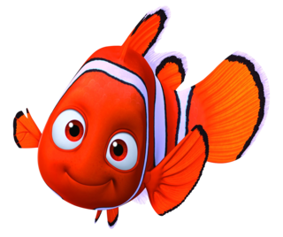

Nemo
Es un joven pez payaso que vive en el océano y es el hijo de Marlin, otro pez payaso. Nemo es curioso, valiente y tiene una aleta más pequeña debido a una lesión en su nacimiento, lo que le lleva a enfrentar desafíos especiales en su vida submarina. Su historia es central en la película, ya que se aventura en una emocionante aventura después de ser separado de su padre. A lo largo de la película, Nemo muestra una gran determinación y coraje mientras lucha por reunirse con su familia. Su personaje encarna el espíritu de la perseverancia y la importancia de la familia en la trama de la película.
Peliculas